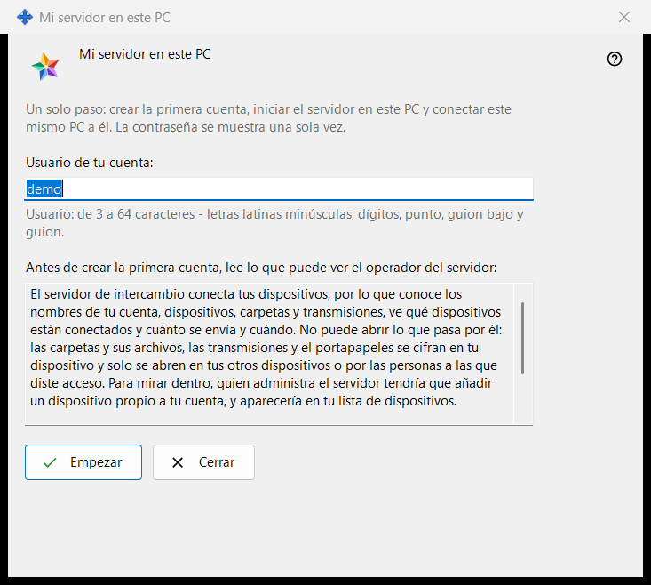
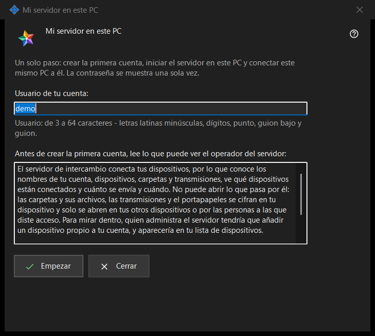

Mi servidor en este PC
Para qué sirve
Configura en un solo paso un Media Exchange Server personal en este PC: crea la primera cuenta, inicia el servidor y conecta a él este mismo PC. Se abre desde el botón «Usar este PC como mi servidor..» de la página Media Exchange Server de los ajustes de Share Manager, que solo aparece mientras no haya ningún servidor configurado en este PC.


En este orden
- Revisa el usuario sugerido, tomado de tu nombre de usuario de Windows, o escribe el tuyo.
- Lee la declaración de lo que puede ver el operador.
- Pulsa «Empezar» y espera los cuatro pasos.
- Copia la contraseña enseguida, y después la huella o la cadena de conexión para tus otros dispositivos.
- Pulsa «Cerrar».
Los elementos
Usuario
«Usuario de tu cuenta:» admite de 3 a 64 caracteres: letras latinas minúsculas, dígitos, punto, guion bajo y guion; las mayúsculas se convierten en minúsculas. La indicación bajo el campo pasa al color de aviso mientras el texto no pueda ser un usuario, y «Empezar» no hace nada hasta que pueda serlo.
Lo que puede ver el operador
El cuadro de solo lectura bajo «Antes de crear la primera cuenta, lee lo que puede ver el operador del servidor:» enumera lo que un operador del servidor puede ver de cuentas, dispositivos, carpetas, retransmisiones y portapapeles, lo que el servidor no puede leer y cuántos días se conservan los registros. En tu propio servidor, el operador eres tú.
Pasos y fallos
«Empezar» ejecuta cuatro pasos y nombra el actual: «Creando la cuenta..», «Iniciando el servidor..», «Comprobando el certificado..» y «Conectando este PC..». Mientras tanto el usuario queda bloqueado y la ventana no se puede cerrar. Si no se creó ninguna cuenta, una frase explica el motivo, por ejemplo «Esa cuenta ya existe - elige otro usuario.»; corrige el usuario y pulsa «Empezar» de nuevo.
Resultado y direcciones
Si todo sale bien, la ventana dice «Listo: el servidor está en marcha, la cuenta está creada y este PC está conectado a ella.» y muestra «Dirección para este PC:», «Dirección para otros dispositivos:» (que dice «no definida - indícala en los ajustes del servidor de intercambio» hasta que se define esa dirección), «Usuario:», «Contraseña (se muestra una sola vez):» y «Huella del certificado:». Cuando se define la dirección para otros dispositivos, se añade «Cadena de conexión:». Si el servidor no se inició, la cuenta existe igualmente y su contraseña se muestra una sola vez más abajo.
Contraseña y copia
La contraseña está enmascarada. «Mostrar la contraseña» la revela; «Copiar contraseña» la pone en el portapapeles por la vía protegida, que la mantiene fuera del historial del portapapeles de Windows y del portapapeles en la nube. La ventana la muestra solo esta vez, salvo que «Guardar las contraseñas de las cuentas en este PC» esté activada. «Copiar huella» y «Copiar la cadena» son copias normales: ninguna contiene una contraseña. Los otros dispositivos necesitan la dirección, el usuario, la contraseña y la huella, que comparan en la primera conexión.
Cierre
Si la contraseña no se copió, ni se mostró, ni se guardó en este PC, «Cerrar» pregunta «¿Cerrar sin copiar la contraseña?» con No como respuesta predeterminada, porque la contraseña no se puede mostrar de nuevo, solo restablecer.
Ajustes del gestor · Ajustes de uso compartido SFTP · Ajustes del servidor de intercambio